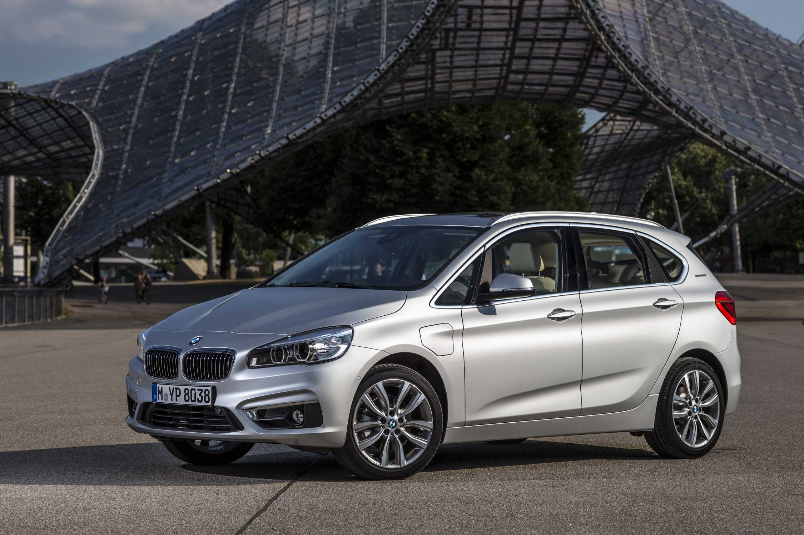
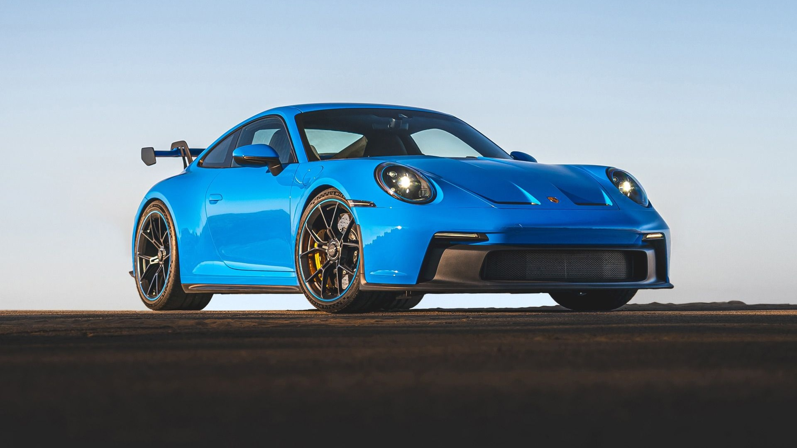
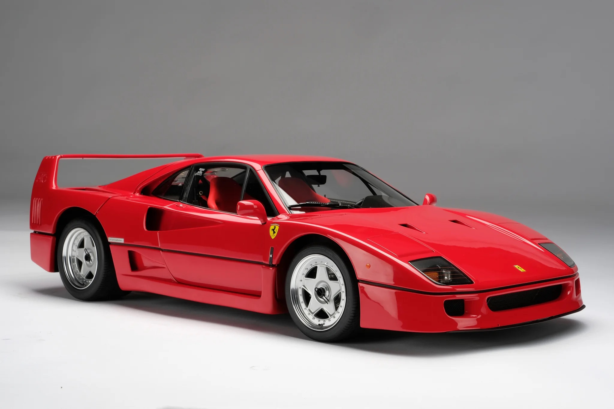

AUTOSELECT
The car you are looking for with the best warranty
Available vehicles
-
BMW 225xe

Description for the BMW 225xe
You're looking at it. Well, sorta. It's rear-drive some of the time. Specifically when it's in electric drive mode, because the motor is at the back. At the front, meanwhile, a 1.5-litre three-cylinder engine (the one from the Mini Cooper) does the honours. The two can operate independently or together. And there's a plug-in battery.
TopGear Review BMW 225xe -
Porsche 911

Description for the Porsche 911
The Porsche 911 is a high-performance, two-door luxury sports car with a distinctive rear-engine layout, produced continuously by Porsche in Stuttgart, Germany, since 1964.Key CharacteristicsDesign: Features an iconic, sloped fastback roofline, a muscular rear stance, and round headlights.Engine: Powered by a rear-mounted, flat-six ("boxer") engine. Early models used air cooling, while modern generations use advanced water-cooled and turbo-hybrid setups.Layout: Typically utilizes a 2+2 seating configuration (two small rear seats) alongside a front luggage compartment.Body Styles: Available across generations as a Coupe, Cabriolet (convertible), and Targa (semi-convertible with a roll bar).
TopGear Review Porsche 911 -
Ferrari F40

Description for the Ferrari F40
The Ferrari F40 is a legendary mid-engine, rear-wheel-drive supercar built from 1987 to 1992 to celebrate Ferrari's 40th anniversary.Overview and HistoryEnzo's Final Car: It was the last new car personally approved by company founder Enzo Ferrari before he passed away in 1988.Racing Heritage: Designed as a race car built for the road, it evolved directly from Ferrari's extreme engineering philosophy.Milestone Speed: It was the first production street-legal car to officially break the 200 mph (322 km/h) barrier, reaching a top speed of 201–228 mph depending on testing conditions
TopGear Review Ferrari F40
Contact
Do you have any questions? Contact us!